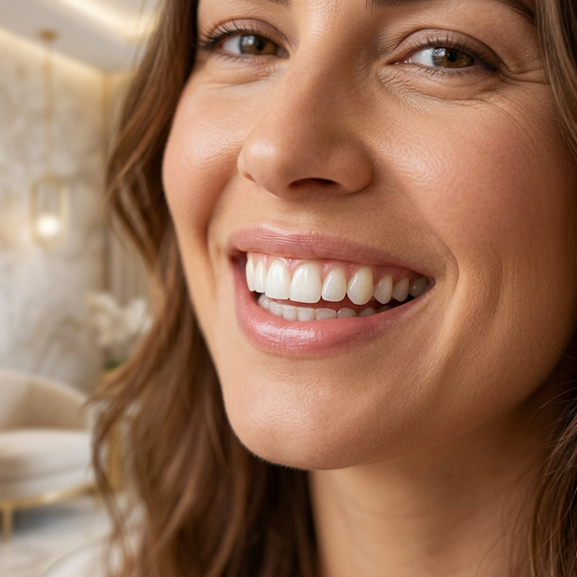
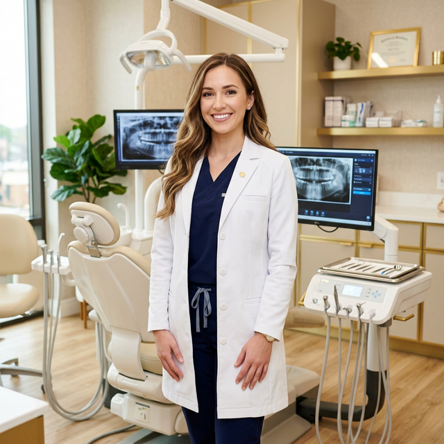

Especialista en diseño de sonrisa de mínima invasión y rehabilitación protésica con tecnología de vanguardia.

R2 Maestría en Prostodoncia Avanzada
Soy odontóloga con una profunda pasión por transformar sonrisas de manera natural y mínimamente invasiva. Actualmente curso la maestría en Prostodoncia Avanzada, donde perfecciono técnicas de rehabilitación protésica de alto nivel.
Creadora del método Bee Natural 🐝, un enfoque único de carillas estratificadas de resina que logra resultados estéticamente impecables respetando la estructura dental natural del paciente.
Mi filosofía: cada sonrisa es única, y merece un tratamiento personalizado con los más altos estándares de calidad.
Ofrezco soluciones dentales de alta calidad, combinando tecnología avanzada con un enfoque personalizado para cada paciente.
Rehabilitación completa con coronas, puentes y prótesis de última generación. Devuelve funcionalidad y estética a tu sonrisa.
Más informaciónTécnica exclusiva de carillas estratificadas de resina con resultados naturales y mínimamente invasivos. Tu sonrisa, pero mejor.
Más informaciónPlanificación digital personalizada para transformar tu sonrisa de forma predecible y conservadora. Resultados que se ven desde la primera cita.
Más informaciónTratamientos integrales para restaurar la función y estética completa de tu boca. Soluciones duraderas y de alta calidad.
Más informaciónCada sonrisa cuenta una historia. Conoce algunos de los casos que hemos transformado con dedicación y precisión.
¿Quieres ver más resultados? Sígueme en Instagram
@dra.danielacazaresComparto mis conocimientos y técnicas a través de cursos teórico-prácticos diseñados para odontólogos que desean perfeccionar sus habilidades en odontología estética y restaurativa.
Aprende desde cualquier lugar con sesiones interactivas en vivo por Zoom.
Sesiones hands-on para perfeccionar la técnica con pacientes reales.
Recibe constancia avalada al completar tu formación.
Carillas Estratificadas de Resina
"La Dra. Daniela transformó mi sonrisa por completo. El resultado fue tan natural que nadie nota que tengo carillas. ¡Estoy encantada con el resultado!"
"Excelente profesional. Me explicó todo el proceso desde el inicio, me sentí muy segura y confiada. El diseño de sonrisa quedó increíble."
"Después de años sin sonreír con confianza, la Dra. Daniela me devolvió las ganas de mostrar mi sonrisa. Su técnica de mínima invasión fue perfecta para mi caso."
"Tomé su curso de Bee Natural y fue una experiencia increíble. Muy bien explicado, práctico y con mucho contenido de valor. Totalmente recomendado para colegas."
Resolvemos tus dudas más comunes sobre nuestros tratamientos.
Las carillas Bee Natural son un tratamiento de odontología estética que utiliza resina compuesta estratificada artesanalmente para lograr un resultado natural e imperceptible. Es un procedimiento mínimamente invasivo que conserva la mayor parte de tu estructura dental.
Dependiendo de la complejidad del caso, el diseño de sonrisa puede realizarse en 1 a 3 citas. En tu primera visita hacemos una valoración completa y planificación digital para que puedas visualizar el resultado antes de iniciar.
¡Sí! La técnica Bee Natural utiliza capas de resina de diferentes opacidades y colores para replicar la naturaleza del diente. El resultado es completamente imperceptible a simple vista.
La Prostodoncia es la especialidad odontológica dedicada a la rehabilitación oral con prótesis dentales como coronas, puentes, carillas e implantes. La formación avanzada permite manejar casos complejos con los más altos estándares de calidad.
Puedes agendar tu cita directamente por WhatsApp al 844-497-9736, por llamada telefónica, o a través del botón verde flotante que aparece en esta página. ¡Te responderemos a la brevedad!
Saltillo, Coahuila, México
Lunes a Viernes: 9:00 AM - 6:00 PM
Sábado: 9:00 AM - 2:00 PM